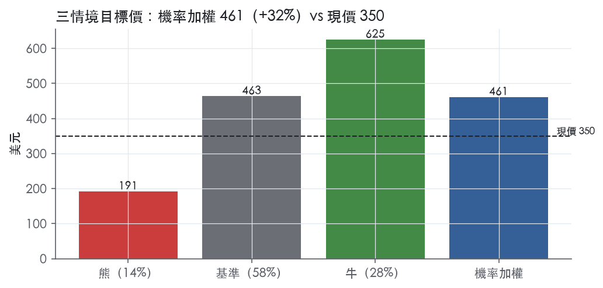
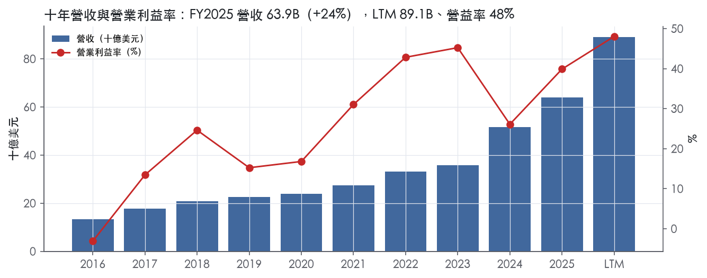
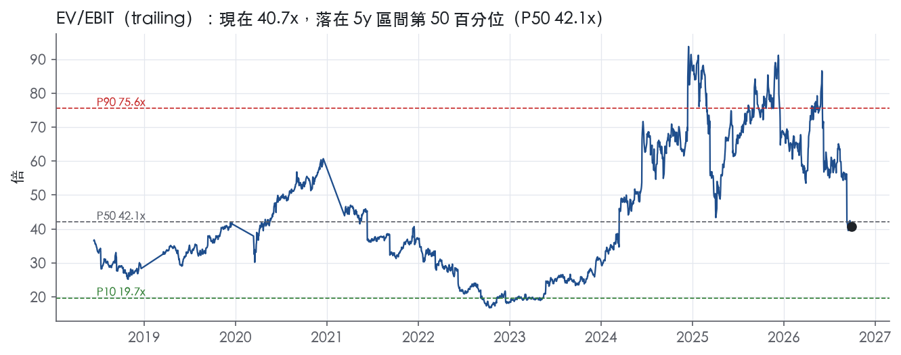
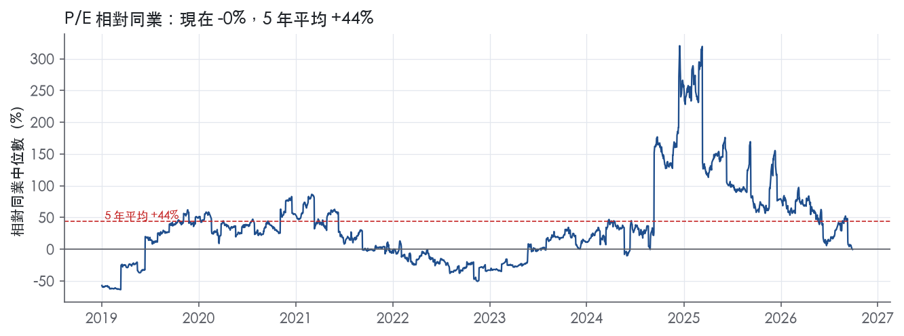
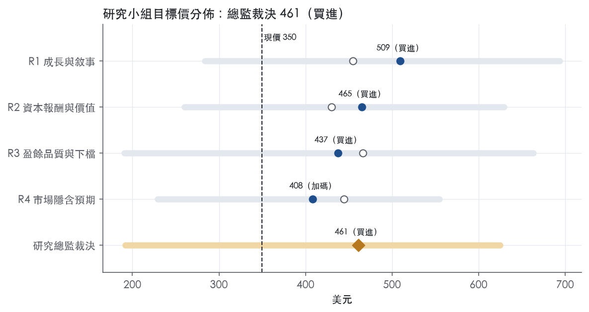
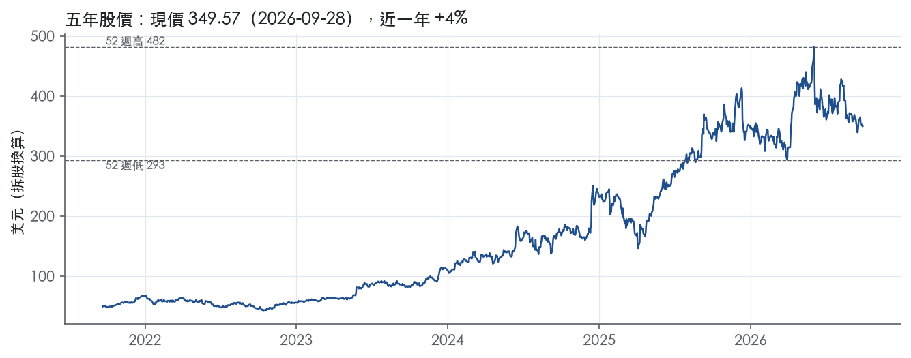

評等總表 › 資訊科技 › AVGO
指引已定價、倍數被壓，兌現後回升，看多｜評等 買進｜目標價 461
| 報告日 | 評等 | 目標價 | 當時股價 | 超額報酬 |
|---|---|---|---|---|
| 2026-09-28 | 買進 | 461 | 350 | +22.9% |
| 評等 | 買進 |
| 12 個月目標價 | 461 美元 |
| 現價 | 349.57 美元（2026-09-28） |
| 預期報酬 | 股價 +31.9%＋股息 0.7%＝總報酬 +32.6%；同業籃門檻 9.7%，超額 +22.9% |
| 估值方法 | EV/EBITA 23.0x，套在第 5–8 季的EBITA（也就是一年後的未來四季） |
| 三情境 | 熊 191／基準 463／牛 625 |
| 研究流程 | 四位研究員兩輪辯論＋研究總監裁決 |
| 資料來源 | SEC EDGAR XBRL、Tiingo、FRED（全免費） |
指引已定價、倍數被壓，兌現後回升，看多（研究總監裁決，四位研究員兩輪辯論後）
評等 買進｜12 個月目標價 461 美元（總監三情境機率加權 470 與研究員中位數 451 各半）｜現價 349.57（2026-09-28）
預期報酬：股價 +31.9%＋股息 0.7%＝總報酬 +32.6%。同業籃門檻 9.7%，超額 +22.9%。
估值方法：EV/EBITA 23.0x，套在第 5–8 季的EBITA（也就是一年後的未來四季）。三情境：熊 191（14%）／基準 463（58%）／牛 625（28%）。
什麼會讓研究總監改變看法：FY2027Q1 指引低於 Q4 實績且 FY2026 10-K 應收缺口擴大，轉中性並把熊機率提到三成；管理層揭露 FY2028 AI 框架或新 XPU 客戶量產時程且毛利率未因機架下滑，上調倍數至 P50 以上。
| 過去四季（實際，FY2026Q3） | 未來四季 | 第 5–8 季 | 第 9–12 季 | |
|---|---|---|---|---|
| 營收（B） | 89.1B | 138.1B | 165.7B | 175.7B |
| 營收成長 | 48.7% | 55.0% | 20.0% | 6.0% |
| 營業利益率 | 48.0% | 52.0% | 52.0% | 50.0% |
| EPS（美元） | 7.85 | 12.88 | 15.49 | 15.71 |
| EPS 成長 | 99.9% | 64.2% | 20.2% | 1.4% |
| 每股股息（美元） | 2.54 | 2.54 | 2.54 | 2.54 |
| P/E（現價） | 44.6x | 27.1x | 22.6x | 22.3x |
| 股息殖利率（現價） | 0.7% | 0.7% | 0.7% | 0.7% |
過去四季為申報數字；預測為研究總監的假設、程式計算。倍數與殖利率都用現價計算，用來看現價對應各期獲利的高低。
| 情境 | 機率（歷史） | 故事 | 未來四季營收成長 | 第 5–8 季營益率 | 倍數 | 目標價 | 股價漲跌 |
|---|---|---|---|---|---|---|---|
| 熊 | 14%（6%） | 對應風險表第 1、2 條：前五大 XPU 客戶延單或改租賃遞延付款，FY2027Q1 指引低於 Q4 實績，固定成本去槓桿加一次性存貨減損與信用損失，倍數落到前瞻帶 P25 下方 | 40.0% | 42.0% | 16.0x | 191 | -45.2% |
| 基準 | 58%（66%） | Q4 指引 34.8B 兌現後高原化，Q5–Q8 成長 20%，機架與議價壓力使營益率守在 52%，倍數停在前瞻帶 P50 略下 | 55.0% | 52.0% | 23.0x | 463 | 32.6% |
| 牛 | 28%（28%） | Q4 AI 21.7B 後持續季增，FY2027Q2 財報前管理層揭露 FY2028 AI 框架或新 XPU 客戶量產時程，推翻市場隱含的 FY2028 後停滯，倍數自 P50 下方重評至 P50–P75 之間 | 65.0% | 54.0% | 26.0x | 625 | 78.7% |
目標價由程式依研究總監的驅動與倍數計算；機率由研究總監給定。括號內是歷史頻率：把這檔股票過去十年 12 個月報酬的波動形狀，置中在基準情境，結果落在各情境附近的比例。

四位研究員用不同方法各自估值，回應研究總監的質疑後交出第二輪，最後由總監逐點裁決。各研究員的主張見第七章，裁決理由見第八章，完整論證見《研究底稿》。
| 立場（一輪→二輪） | 加權目標價（一輪→二輪） | 評等（一輪→二輪） | 第二輪倍數 | 熊～牛目標價 | |
|---|---|---|---|---|---|
| R1 成長與敘事 | 看多→看多 | 455→509 | 買進→買進 | 31.0x | 283～694 |
| R2 資本報酬與價值 | 看多→看多 | 430→465 | 加碼→買進 | 23.0x | 260～629 |
| R3 盈餘品質與下檔 | 看多→看多 | 466→437 | 買進→買進 | 22.0x | 191～663 |
| R4 市場隱含預期 | 看多→看多 | 444→408 | 買進→加碼 | 18.0x | 229～555 |
| 研究總監裁決 | 看多 | 461 | 買進 | 23.0x | 191～625 |
目標價由程式依各自的驅動與倍數計算；評等＝機率加權總報酬 − 同業籃門檻。
Broadcom 是一家以併購堆疊出來的半導體＋基礎設施軟體雙引擎公司。公司自我定位為「a global technology leader that designs, develops and supplies a broad range of semiconductor and semiconductor-based solutions and infrastructure software solutions」¹，60 年歷史源自 AT&T/Bell Labs、Lucent 與 HP，並靠收購 LSI、Broadcom Corporation、Brocade、CA、Symantec Enterprise Security 與 VMware 一路擴張¹。客戶端是「the world's leading business and government customers」¹，具體來說半導體側賣給超大規模雲端業者（hyperscalers）與 AI 前沿模型公司、OEM 與系統整合商¹，軟體側賣給大型企業與政府機關，「including most of the Fortune 500」¹。FY2025 LTM 營收規模已達 89.10B 美元，公司體量足以支撐其在 AI 基礎設施供應鏈中的關鍵地位。
公司財報上只揭露兩大報表分部：半導體解決方案（Semiconductor Solutions）與基礎設施軟體（Infrastructure Software），Q3 FY2026 兩者營收占比分別為 70% 與 30%（20,839M／8,752M，共 29,591M）²，相較 Q3 FY2025 的 57%／43%，半導體占比明顯提高，主要由 AI 需求推動。10-K 進一步把半導體業務拆成五大終端市場：Networking Connectivity、Wireless Device Connectivity、Servers and Storage Systems、Broadband 與 Industrial¹，但未揭露各終端市場個別占營收比重（10-K 未揭露）。其中 Networking Connectivity 涵蓋客製化 ASIC／XPU、乙太網路交換與路由晶片、乙太網路 NIC、PHY 與光學元件，是公司對接 hyperscaler 客製加速器與 AI 網路需求的核心產品線¹。基礎設施軟體則分五大組合：Private Cloud（以 VMware Cloud Foundation 為核心）、Mainframe Software、Cybersecurity（Symantec、Carbon Black）、Enterprise Software 與 FC SAN Management¹。VMware 併入後，私有雲組合強調「public cloud scale and agility with private cloud security」，並支援 VCF 授權在地端與雲端間可攜（license portability）¹。AI 語意下，半導體解決方案本季（Q3 FY2026）內部再細分出「AI 半導體」子線，本季 AI 半導體營收 167 億美元、年增 221%、季增 54%²，是目前成長最快的產品線，但 10-K 未單獨揭露 AI 半導體占整體半導體分部比重的正式定義（10-K 未揭露）。
Broadcom 客戶集中度極高——「a relatively small number of customers account for a significant portion of our net revenue」¹，前五大終端客戶合計約占 FY2025 與 FY2024 淨營收各 40%¹，通路上經銷商（distributors）占 FY2025 與 FY2024 淨營收各 48%¹。半導體多透過經銷商、OEM 或其委外製造商（CM）銷售，公司在馬來西亞設有主要倉儲並在多國設有銷售與客戶支援據點以支援全球出貨¹。軟體客戶則多為跨產業大型企業，涵蓋銀行、保險、政府機關、電信、製造、零售、教育與醫療機構等¹。人力配置上，公司約 3.3 萬名員工中 57% 從事研發，地域分布北美 49%、亞洲 36%、歐非中東 15%¹，反映其研發重心在美國而製造與部分客戶集中在亞洲。製造面高度委外，前段晶圓製造主要委由 TSMC 等外部晶圓廠，封裝測試則委由 TSMC、日月光、鴻海、Amkor、矽品等代工¹，僅在專屬製程（如 FBAR 濾波器、III-V 族雷射）保留內部產能，主要位於美國與新加坡¹。這種輕資產、外包為主的模式，是公司資本支出/營收比長年壓在 1% 上下的結構性原因（對應年度資料列 1.0%）。
過去四季 Broadcom 呈現營收與獲利同步加速、AI 半導體成為主要驅動力的態勢。FY2025Q4（期末 2025-11-02）營收 18.02B、年增 28.2%，營益率回升至 41.7%（對應期別列）。FY2026Q1 營收 19.31B、年增 29.5%，營益率 44.3%（同上期別列）。FY2026Q2 營收 22,187M、年增 48%，GAAP 淨利 9,310M（+88% YoY），Adjusted EBITDA 15,244M 占營收 69%，自由現金流 10,262M 占營收 46%，CEO 表示「Q2 semiconductor revenue from AI of $10.8 billion grew 143% year-over-year」³，CFO 給出 Q3 指引「third quarter revenue guidance of approximately $29.4 billion, an increase of 84 percent」³。FY2026Q3（期末 2026-08-02）營收 29,591M、年增 86%，GAAP 營益 15,955M（+171%）、Non-GAAP 營益 20,095M（+92%），GAAP 稀釋 EPS 2.68、自由現金流 13,665M 占營收 46%，CEO 指出「Q3 AI semiconductor revenue of $16.7 billion grew 221% year-over-year」²。公司對 Q4 FY2026 指引為「revenue guidance of approximately $34.8 billion, an increase of 93 percent from the prior year period」，Non-GAAP 營益率指引維持約 66%²，且預期「AI semiconductor revenue to accelerate to $21.7 billion, up 236% year-over-year」²。四季疊加看，營收年增率從 28% 一路加速到 86%，指引更看到 93%，成長曲線陡峭且集中在 AI 半導體。
公司自述的策略是「sustained technology leadership and developing category-leading solutions」，透過內部研發加上策略性併購維持技術領先，形成「diversified and sustainable operating and financial results」的商業模式¹。成長引擎具體指向 AI 資料中心基礎建設：公司稱其半導體方案讓客戶「build and deploy AI data center infrastructure for their training and inference workloads」，並以開放、標準化的乙太網路架構支援訓練與推論流量¹，核心產品包括客製加速器（XPU）、乙太網路交換與路由晶片、NIC、PHY 與光學元件及機架系統¹。軟體端的成長邏輯建立在 VCF 的訂閱與可攜授權模式上，公司稱其「enterprise-wide license model will continue to offer our customers reduced complexity, more flexibility and an easier renewal process that will help drive revenue growth」¹。管理層在最新財報中把敘事收斂到 AI 客製矽：Hock Tan 稱「demand for our custom AI accelerators and networking continues to be very strong」並給出加速的 Q4 AI 半導體指引²。
Broadcom 目前是靠少數幾個 hyperscaler／前沿模型客戶的 XPU 訂單堆出結構性加速成長，這使營收集中度風險與客戶議價力風險同步上升。軟體分部（VMware 為主）成長已明顯放緩至個位數到雙位數區間，未來估值故事幾乎全押在 AI 半導體的訂單能見度上。若任一大客戶砍單或延遲量產，目前 30%+ 的年增率與 93% 的指引將面臨顯著下修風險。

Broadcom 的護城河評為「窄」：我們有把握未來 5 年以上 ROIC 仍高於資本成本，但還沒有足夠把握延伸到 10 年。支撐評級的是軟體端的轉換成本，以及半導體端的專利與專屬製程，兩者都有具體證據。壓住評級的是歷史 ROIC 在有資料的 8 年中只有 5 年高於資本成本，而且每次大型併購都把 ROIC 打到資本成本附近。趨勢判為穩定：AI 客製矽讓近期利潤率創新高，但同一條業務也推高了客戶集中度與「客戶自己做」的風險，兩股力量大致抵銷。
優勢來源有兩類：轉換成本為主，無形資產為輔。
轉換成本。 軟體端的轉換成本最強。10-K 寫道 "Many of the largest companies in the world, including most of the Fortune 500, and many government agencies rely on our infrastructure and security software solutions"¹，用途是 "run their mission-critical workloads"¹。大型主機軟體組合的定位是讓客戶 "amplify the value of their mainframe investments"¹。這類軟體嵌在核心交易系統裡，換掉它的遷移成本與停機風險遠大於授權費本身。VCF 同時承載虛擬機與容器化工作負載 "on a single platform"¹。平台一旦成為企業私有雲的底座，更換就等於重建整個 IT 環境。
半導體端的轉換成本來自共同開發。ASIC 是 "custom products built to our individual customers’ specifications"¹，而且 "Many of our major customer relationships have been in place for many years and are often the result of years of collaborative product development"¹。客製加速器進入客戶的軟體堆疊與機櫃設計之後，下一代若要換供應商，必須重走設計與驗證流程，這是 XPU 業務最主要的黏著力。
無形資產。 截至 2025 年 11 月 2 日，公司擁有約 19,000 件美國及其他專利，另有 2,170 件申請中，專利到期日分布在 2025 至 2044 年¹。比專利數量更關鍵的是專屬製程：濾波器採用 "our proprietary commercial film bulk acoustic resonator (“FBAR”) filter technology"¹，PHY 則建立在 "a proprietary digital signal processing (DSP) communication architecture"¹。公司保留內部晶圓廠生產這些產品，目的之一是 "protect our IP"¹。軟體原始碼同時受營業秘密與著作權保護¹。不過公司自承 "We are not substantially dependent on any single patent or group of related patents"¹。因此專利構成進入門檻，但不是單點壟斷，我們把它放在輔助位置。
網路效應、成本優勢與效率規模三類不列入，因為 Item 1 沒有提供足以證明這三類的具體證據。
數字支持「有護城河」，但不支持「寬」。ROIC 十年平均 16.4%，高於資本成本代理值 10.2%，平均利差 6.2%。但 ROIC 標準差達 7.9%，區間從 7.3% 到 30.6%，有資料的 8 年中只有 5 年高於資本成本，這不是寬護城河該有的穩定度。低點落在 FY2019 的 7.4%、FY2020 的 7.3%與 FY2024 的 10.0%，時間上分別接在 CA／Symantec 與 VMware 併購之後。我們的解讀是：業務本身的回報沒有崩，是併購溢價墊高了投入資本。但那筆資本是股東真實付出的，所以這幾個低點不能剔除。
利潤率給出比較正面的訊號。毛利率十年平均 58.4%、標準差 8.0%，最新年度 67.8%，FY2026Q3 單季達 69.1%。這條曲線是一路墊高，沒有出現均值回歸，顯示定價力並未被侵蝕。營業利益率標準差高達 14.4%，最低曾到 -3.1%，但波動主要來自併購後的攤銷，而不是定價權流失。FCF 利潤率十年平均 40.7%、標準差 8.9%，比會計利潤穩定得多，這是我們給「窄」而不是「無」的主因。
數字與主張的衝突照實寫：ROIC 有 3 年低於資本成本，直接牴觸「寬」的定義，所以評級停在「窄」。
最大的威脅是客戶自己做。公司寫明預期競爭會加劇，來源包括 "new companies, including some of our customers, enter the markets"¹，競爭對手也包括 "the internal resources of large integrated OEMs"¹。前五大終端客戶合計約占 FY2025 淨營收 40%¹。公司自承 "The loss of, or significant decrease in demand from, any of our top five end customers could have a material adverse effect"¹。XPU 的轉換成本是一代一代累積的，客戶只要在任何一代把設計收回內部或改找其他夥伴，黏著力就會在那一代中斷。
第二個威脅是對併購的依賴。公司策略明寫要靠 "strategic acquisitions of businesses and technologies"¹。歷史顯示每次大型併購都把 ROIC 拉到資本成本附近，下一筆大案很可能重演。
第三個威脅是 IP 外溢。公司與前身簽訂的授權與交互授權 "have both benefited our business and enabled some of our competitors"¹。
第四個威脅來自軟體授權模式的轉換。公司押注 "enterprise-wide license model"¹。如果續約摩擦促使客戶遷往公有雲或替代方案，就代表軟體轉換成本比我們的假設弱。
目標倍數相對半導體同業可以給溢價，理由是軟體轉換成本加上 AI 客製矽的共同開發黏性，能支撐 FCF 利潤率長期高於一般晶片商。但溢價只應涵蓋約 5 年的超額回報期，之後的終值假設要讓 ROIC 向資本成本收斂，不宜比照寬護城河給 10 年以上的高倍數期。如果出現下一筆大型併購，或前五大客戶出現自研替代，應直接下修溢價幅度。
| 指標 | 最新 | 十年平均 | 標準差 | 最低 | 最高 |
|---|---|---|---|---|---|
| ROIC | 19.9% | 16.4% | 7.9% | 7.3% | 30.6% |
| 毛利率 | 67.8% | 58.4% | 8.0% | 44.9% | 68.9% |
| 營業利益率 | 39.9% | 25.2% | 14.4% | -3.1% | 45.2% |
| FCF 利潤率 | 42.1% | 40.7% | 8.9% | 20.3% | 49.2% |
| ROE | 31.0% | 29.2% | 18.9% | 8.0% | 60.3% |
程式計算。資本成本代理值（10 年債＋5%）：10.2%；ROIC 平均減資本成本：6.2%；ROIC 有資料的 8 年中，高於資本成本 5 年。
LTM 營業現金流／淨利 1.06x、自由現金流／淨利 1.03x，盈餘有現金支撐。但 SBC／營收 LTM 9.5%、近三年平均 9.7%，遠高於十年平均 7.4%，是本系統紅燈項目，且本系統不加回 SBC，代表 GAAP 淨利被股權酬勞實質稀釋的幅度在放大。應收帳款成長比營收快 38 個百分點（FY2025）是另一個未完全解釋的紅旗。整體屬於「有紅旗但可解釋大部分、仍有一項待觀察」的中品質區間。
跟上，而且跟得穩定。LTM CFO／淨利 1.06x、FCF／淨利 1.03x，近三年平均更高達 1.95x／1.90x、十年平均 1.96x／1.88x，均落在綠燈區。應計比率 LTM -1.3%、近三年 -6.6%、十年平均 -6.8%，長期為負值代表盈餘品質靠現金而非應計項目撐起，綠燈。近八季 CFO 與 FCF 同步成長，FY2026Q3 單季 CFO 14.20B、FCF 13.66B，對應淨利 13.09B，現金流甚至略高於淨利。新聞稿也確認 Q3 FCF 為 13,665M，占營收 46%（²）。唯一要注意的是應收帳款成長 FY2025 比營收快 38pp，若這個缺口持續擴大，未來季度 CFO／淨利比值可能被侵蝕，屬於前瞻性觀察點而非目前已發生的現金缺口。
Q3 FY2026 非 GAAP 調整包含攤銷、SBC、重組及收購相關成本等項目（²）。具體金額上，GAAP 營業利益 15,955M 對比非 GAAP 營業利益 20,095M，差距約 4,140M（²）；GAAP 淨利 13,088M 對比非 GAAP 淨利 16,372M，差距約 3,284M（²）；GAAP 稀釋 EPS 2.68 對比非 GAAP 稀釋 EPS 3.32（²）。新聞稿載明非 GAAP 排除「acquisition-related intangible assets 攤銷、股權酬勞費用（SBC）、重組及其他費用、收購相關成本（含整合成本）、非 GAAP 稅務調整及其他調整」（²），且公司自陳「排除這些項目不代表這些項目是非經常性、不頻繁或異常的」（²）。判斷：無形資產攤銷（多為過去 VMware、CA 等併購產生）可視為非現金會計項目，估值時可部分還原；但 SBC 是持續性、每年都在發生的真實經濟成本（稀釋股東權益），十年平均已達 7.4%、近三年升至 9.7%，不應完全加回，這是本報告對非 GAAP 淨利打折的主要理由。
槓桿與付息能力都在安全區間，資本配置以回饋股東為主但沒有過度舉債跡象。淨負債／EBITDA LTM 0.69x，遠低於 1.50x 綠燈門檻，近三年平均 1.73x、十年平均 1.75x，槓桿逐季下降的軌跡也反映在總債務從 FY2024Q4 的 67.54B 降到 FY2026Q3 的 59.42B、現金同期從 9.35B 增至 23.98B。利息保障倍數 LTM 13.7x，十年平均僅 5.14x，近期明顯改善。（股利＋回購）／淨利 LTM 53.6%，近三年平均卻高達 147.5%、十年平均 132.1%——這代表過去幾年公司回饋股東的金額經常超過當期淨利，需搭配舉債或現金水位下降才能達成，但目前淨負債/EBITDA 已降到 0.69x，顯示這個模式並未惡化資產負債表。稀釋股數年變動 LTM 僅 0.2%（黃燈），但近三年平均 4.8%，主要與過去併購（VMware）相關股票發行有關，近期已明顯放緩。
SBC／營收紅燈（LTM 9.5%，近三年平均 9.7%）：真實成本，非一次性。10-K 未在節錄段落提供 SBC 明細，但新聞稿明確將 SBC 列為非 GAAP 排除項目之一，且公司自承排除項目「不代表非經常性」（²）。近三年平均高於十年平均近 2.3pp，方向與 VMware 併購後員工留任股權綁定增加一致，屬結構性、非一次性的真實稀釋成本，估值時不應完全加回。
應收帳款成長比營收快 38pp（FY2025）：需要標記但暫可容忍。FY2025 營收年增 23.9%，若應收帳款成長率因此達到約 60% 上下，代表收款速度落後出貨速度。10-K 節錄段落未提供應收帳款餘額細節可供查證原因，故無法從原文確認是否為客戶集中度（前五大客戶占營收約 40%（¹））拉長帳期所致，抑或是 AI 客戶大單出貨在季底尚未收現的時間差。由於同期 CFO／淨利仍達 1.06x 且未惡化，判斷為觀察項而非已兌現的現金風險，但若 FY2026 全年應收帳款成長持續超前營收，須調降結論等級。
存貨成長超前營收 5.1pp（黃燈，FY2025）：可解釋。公司正處於 AI 半導體業務加速期，FY2026Q3 營收年增 85.5%，為滿足客製化 ASIC 與網通產品的出貨備貨，存貨溫和超前成長合理，未達 15pp 紅燈門檻，判斷為業務擴張的正常現象。
歷年淨利率跳動（FY2016→FY2019、FY2020→FY2022、FY2023→FY2025 多次跳動 10pp 以上）：多為併購與稅務一次性項目造成，非經常性營運惡化。10-K 節錄段落未包含損益表逐年附註細節，無法逐筆核對觸發原因（如商譽減損、稅改一次性費用、VMware 併購成本），僅能依量化底稿的方向性判斷：FY2024 淨利率較 FY2023 驟降 28pp 對應公司 FY2024 GAAP 淨利僅 5.89B（相較 FY2023 的 14.08B），時點與 VMware 併購完成後的整合成本、攤銷大增吻合；FY2025 淨利率回升 25pp 對應淨利回升至 23.13B，與整合成本消化、AI 營收放量提升營益率（FY2025 營益率 39.9% vs FY2024 26.1%）方向一致。判斷這些跳動主要是併購會計與業務結構轉換的一次性效果疊加營運槓桿改善，非盈餘品質持續惡化的訊號，但因無法逐筆核對原文附註，保留部分不確定性。
估值應以 GAAP 盈餘為錨、對非 GAAP 數字打折使用，因為 SBC 是持續且逐年攀升的真實成本，不應如公司非 GAAP 定義般完全排除（²）。現金轉換與利息保障均為綠燈、淨負債／EBITDA 僅 0.69x，槓桿不構成對目前 33x EV/EBITDA、44.6x P/E 倍數的限制。應收帳款成長異常與 SBC 高檔是打折的主因，建議估值時對 GAAP EPS 或 FCF 基礎給予溫和折價（而非套用非 GAAP EPS 4.77→3.32 級距的全額落差），並將 FY2026 應收帳款是否持續超前營收列為下一季追蹤重點。
| 項目 | LTM | 近三年 | 十年 | 燈號 | 規則 |
|---|---|---|---|---|---|
| 營業現金流／淨利 | 1.06x | 1.95x | 1.96x | 綠 | ≥1.00x 綠、<0.80x 紅 |
| 自由現金流／淨利 | 1.03x | 1.90x | 1.88x | 綠 | ≥0.90x 綠、<0.60x 紅 |
| 應計比率（(淨利−CFO)／平均總資產） | -1.3% | -6.6% | -6.8% | 綠 | ≤0.0% 綠、>5.0% 紅 |
| SBC／營收 | 9.5% | 9.7% | 7.4% | 紅 | ≤3.0% 綠、>8.0% 紅 |
| 淨負債／EBITDA | 0.69x | 1.73x | 1.75x | 綠 | ≤1.50x 綠、>3.00x 紅 |
| 利息保障倍數（營業利益／利息） | 13.7x | 7.11x | 5.14x | 綠 | ≥8.00x 綠、<3.00x 紅 |
| 稀釋股數年變動 | 0.2% | 4.8% | 2.8% | 黃 | ≤0.0% 綠、>3.0% 紅 |
| （股利＋回購）／淨利 | 53.6% | 147.5% | 132.1% | 綠 | ≥50.0% 綠、<0.0% 紅 |
| 應收帳款成長 − 營收成長（FY2025） | +37.9pp | — | — | 紅 | ≤5pp 綠、>15pp 紅 |
| 存貨成長 − 營收成長（FY2025） | +5.1pp | — | — | 黃 | ≤5pp 綠、>15pp 紅 |
程式計算；燈號以 LTM（無則近三年平均）判定。
| 風險 | 觸發指標（看什麼數字、在哪裡看） | 對 EPS 的影響方向與粗略幅度 | 未來 12 個月發生機率（高／中／低） | 出處 |
|---|---|---|---|---|
| 客戶集中度：前五大客戶流失或砍單 | 季度法說會揭露的「AI 半導體營收」年增率／季增率是否轉負；10-Q 客戶集中度揭露是否維持 40% | 負向、大：前五大客戶佔營收約 40%（10-K），單一大客戶砍單對 EPS 衝擊為結構性¹ | 中 | 10-K 年報 FY2025 Item 1（業務） |
| AI 半導體需求不可持續 / 產業景氣循環反轉 | 每季 AI 半導體營收年增率（本季 221%、指引 Q4 236%）是否開始收斂或轉負；下一季指引是否低於市場預期 | 負向、大：AI 半導體已是成長主引擎，若客戶「substantially reduce their expansion plans, cancel, reduce or delay their orders」會材料性衝擊營收與 EPS⁴ | 中 | 10-K 年報 FY2025 Item 1A（風險因素） |
| 對台積電（TSMC）單一晶圓代工的依賴 | TSMC 每季法說會揭露的先進製程產能利用率／漲價公告；公司財報中晶圓成本或毛利率是否異常波動 | 負向、中：FY2025 約 95% 委外晶圓由 TSMC 生產，TSMC 可能調漲代工價格或優先配給其他客戶⁴ | 中 | 10-K 年報 FY2025 Item 1A（風險因素） |
| 地緣政治／出口管制（中國－台灣關係、美國出口限制） | 美國商務部 Entity List 新增名單、對中國半導體出口新規公告日；公司揭露中國區營收占比變化 | 負向、中：美國政府持續擴大限制清單，已對營收、供應鏈造成不利影響（10-K 未量化）⁴ | 中 | 10-K 年報 FY2025 Item 1A（風險因素） |
| 經銷商通路集中＋毛利率結構性壓縮（AI 機架租賃模式毛利率較低） | 經銷商佔營收比重（FY2025 為 48%）是否上升；季度毛利率是否較 68-69% 的近期水準下滑 | 負向、中：機架/系統租賃模式「will likely increase our operating margin but compress or lower future gross margin」⁴ | 低 | 10-K 年報 FY2025 Item 1A（風險因素） |
客戶集中度是本報告最看重的一條，因為它同時是機率不低、且一旦發生衝擊最大的風險。10-K 明白寫出「aggregate sales to our top five end customers, through all channels, accounted for approximately 40% of our net revenue for fiscal year 2025」¹，且「the loss of, or significant decrease in demand from, any of our top five end customers could have a material adverse effect」¹。更值得注意的是，10-K 特別點名「our top customers, including our AI customers, may make and have made greater demands on us with regards to pricing and contractual terms, such as seeking to lease AI racks or systems based on our XPUs instead of purchasing」⁴，顯示議價力正在向客戶端傾斜。監測方式很直接：每季法說會的 AI 半導體營收年增／季增數字，以及未來 10-Q 是否維持「前五大佔比 40%」的揭露區間。
AI 需求循環風險與客戶集中度高度相關但角度不同：這是「整個 AI 資本支出週期是否降溫」的系統性風險，而非單一客戶問題。10-K 直言半導體產業「is undergoing profound change due to the adoption and proliferation of AI and has experienced a significant upturn, which may not be sustainable」⁴，且部分 AI 客戶「may have constrained resources or capital and may be unable to pay for their required AI infrastructure and/or seek alternative financings or novel or deferred payment models」⁴——這句話本身已隱含信用風險。目前 Q3 AI 半導體營收年增 221%、Q4 指引年增 236%²，成長率已處於高原區，任何邊際放緩都會被市場放大解讀為週期反轉訊號。
TSMC 依賴是供應鏈端的單點故障風險。10-K 揭露「approximately 95% of the wafers manufactured by our CMs were produced by TSMC」⁴，且公司承認「TSMC also fabricates wafers for other companies, including some of our competitors, and could choose or be required to materially prioritize capacity for other customers or reduce or eliminate deliveries to us on short notice」⁴，「TSMC has raised, and may in the future raise, their prices to manufacture our wafers」⁴。這條風險的觸發指標具體可觀測——TSMC 自家法說會的產能分配與漲價公告——但過去實際材料性衝擊尚未發生，故機率評為中。
地緣政治與出口管制風險在 10-K 中反覆出現，公司列出「geopolitical turmoil (including China-Taiwan relations)」與「restrictive or retaliatory governmental actions...trade protection measures...import/export restrictions」⁴，並承認「The U.S. government continues to add companies to its restricted entity list and/or technologies to its list of prohibited exports to specific countries...which have had and may in the future have an adverse effect on our revenue, supply chain」⁴。10-K 也提到「While U.S. tariffs and counter-tariffs, including semiconductor-related tariffs, have not had a material impact on our financial condition or results of operations」⁴，代表截至申報時尚未實質衝擊，但這是政策風險，可透過美國商務部公告日直接監測。
通路集中＋商業模式轉型的毛利率壓力排在最後，因為公司自己承認這是「已知會發生」的結構性變化而非意外風險：「The sale or leasing of AI racks or systems based on our XPUs will likely increase our operating margin but compress or lower future gross margin, which would adversely impact our stock price」⁴。經銷商通路占比（FY2025 與 FY2024 均為 48%¹）本身不是風險來源，但通路集中疊加客製化產品的存貨風險（「we may also be unable to materially recoup our costs or resell our products to other customers due to the custom nature of certain products」⁴）值得列入監測清單，機率評為低是因為目前毛利率仍維持在 68-69% 高檔（is.gross_margin 各季度列）。
估值倍數已隱含近乎零容錯的成長預期：目前 P/E 44.6x 處於 5 年分位 49.1%、EV/Sales 19.6x 處於 5 年分位 65.8%，倍數本身不算歷史新高，但建立在 Q4 指引年增 93%、AI 半導體年增 236% 的極高基期假設上²。10-K 的風險因子清單完全沒有討論「市場預期與實際指引之間的落差」本身就是一種風險——若任何一季實際成長率僅小幅低於指引（例如從 93% 降到 70%），在目前的高成長預期倍數下，股價修正幅度可能不成比例地放大。這是財報本身不會寫、但投資人必須自己監測的風險：每季實際營收與上季指引的差距、以及 Non-GAAP 營益率指引（連續三季維持 66%）是否首次未達標。
AI 客戶的資產負債表韌性：10-K 雖提及部分 AI 客戶「may have constrained resources or capital」並可能改採「lease AI racks or systems...with alternative financings or novel or deferred payment models」⁴，但沒有具體揭露這類客戶的信用曝險規模或應收帳款集中度。若未來財報附註出現應收帳款週轉天數拉長、或客戶信用減損提列，將是這條隱性風險浮上檯面的訊號，值得在每季 10-Q 的應收帳款附註中追蹤。
現價 349.57 對應 trailing（過去四季）P/E 44.6x、EV/EBITDA 33.1x、EV/EBITA 33.5x、EV/Sales 19.1x、FCF 殖利率 2.4%。主要估值倍數 EV/EBIT 現在 34.3x，落在5 年區間第 50 百分位（P10／P50／P90 = 16.6x／35.5x／63.7x）。（倍數口徑換算：ev_ebita 自家歷史不足，借 ev_ebit 的 5y 分位，乘上兩者現值比 0.843（ev_ebita 現在 34.3x ÷ ev_ebit 現在 40.7x）換算成 ev_ebita 口徑；下圖為換算前的 ev_ebit 原值。）

把程式的機械基準預測放到現價下，市場付的前瞻倍數是：EV/EBITA（未來四季） 24.9x、P/E（未來四季） 34.2x、EV/EBITA（第 5–8 季） 20.7x、P/E（第 5–8 季） 28.4x。反推 DCF 顯示市價隱含未來五年營收年成長 16.8%（WACC 9.0%、終值成長 3.0%、FCF 利潤率 51.5%，SBC 不加回）。
| 倍數 | 現在 | 5 年 P10 | 5 年 P50 | 5 年 P90 | 現在分位 | 全期 P50 |
|---|---|---|---|---|---|---|
| P/E | 44.6x | 22.0x | 46.0x | 125.7x | 49.1% | 43.8x |
| EV/EBITDA | 33.9x | — | — | — | — | 47.8x |
| EV/EBITA | 34.3x | — | — | — | — | 48.6x |
| EV/EBIT | 40.7x | 19.7x | 42.1x | 75.6x | 49.5% | 37.7x |
| EV/Sales | 19.6x | 8.3x | 16.4x | 27.4x | 65.8% | 9.8x |
| P/S | 19.2x | 7.4x | 15.3x | 26.6x | 68.1% | 8.7x |
| P/FCF | 43.4x | 15.1x | 34.1x | 64.3x | 60.9% | 34.1x |
trailing 倍數（股價 ÷ 過去四季）；分位以每個交易日計算。
同業籃：NVDA, AMD, MRVL, QCOM, TXN, ADI（手動名單（playbooks/peers.yaml））。評等門檻 9.7%：同業「倍數不變下持有一年」的隱含報酬中位數（＝ FCF 殖利率 ×(1＋g)＋g，g 為 5 年營收年複合成長並夾在 −2%～8%），每家夾在 0～15%、P/E 低於 5 倍視為資料可疑而排除，中位數再限制在 10 年債到 10 年債＋5% 之間。
| 代號 | 市值 | 5 年營收 CAGR | 營益率 | ROIC | P/E | 5 年 P/E 中位數 | EV/EBITDA | P/FCF | 隱含報酬 |
|---|---|---|---|---|---|---|---|---|---|
| AVGO | 1,668.8B | 21.7% | 48.0% | 19.9% | 44.6x | 46.0x | 33.1x | 42.4x | 10.5% |
| NVDA | 5,557.9B | 66.9% | 65.2% | 110.8% | 29.0x | 57.9x | 27.7x | 43.8x | 10.5% |
| AMD | 992.0B | 28.8% | 15.7% | 6.7% | 156.1x | 106.3x | — | 118.1x | 8.9% |
| MRVL | 232.1B | 22.5% | 16.5% | 7.0% | 83.3x | — | — | 134.1x | 8.8% |
| QCOM | 198.2B | 13.5% | 23.2% | 30.0% | 21.5x | 17.5x | 16.3x | 19.0x | 13.7% |
| TXN | 256.0B | 4.1% | 37.3% | 21.8% | 42.3x | 26.4x | 28.1x | 47.8x | 6.3% |
| ADI | 191.6B | 14.5% | 35.5% | 6.2% | 47.0x | 48.1x | 28.7x | 38.8x | 10.8% |
| 同業中位數 | 18.5% | 29.4% | 14.4% | 44.7x | 48.1x | 27.9x | 45.8x | 9.7% |
全部 trailing，程式以各公司 SEC XBRL 與 Tiingo 行情計算；第一列為本檔。
P/E 相對同業中位數：現在 -0.2%，過去 1 年平均 58.6%、3 年 82.3%、5 年 43.7%；EV/EBITDA 相對同業中位數：現在 21.7%，過去 1 年平均 64.9%、3 年 —、5 年 —。

事後實現前瞻倍數帶（EV/EBIT，2018-09-17..2025-09-15）：P10／P50／P90 = 14.5x／23.9x／34.8x（ev_ebita 前瞻帶資料不足，借 ev_ebit 的前瞻帶乘上 trailing 現值比 0.843 換算）。它是每個交易日的股價除以之後四季實際實現的指標；一年後，今天的第 5–8 季正是那時的未來四季，所以這條帶是 12 個月目標價的同口徑倍數。因為用的是事後實際而非當時預期，過去成長超乎預期的公司這條帶會偏低。
程式的機械基準（成長率從過去四季年增率三年收斂到 6%、利潤率持平）用 事後實現前瞻 EV/EBIT P50（換算） 估值得到 409（17.1%），市場現行前瞻倍數（現價 ÷ 基準 未來四季指標）一年後持平，套在基準 第 5–8 季指標得到 427。這兩個數字只是參考點，不是本報告的目標價；研究員對這個定價的回應在第七章。
下表是每位研究員第一輪（各自獨立）與第二輪（回應研究總監的質疑後）的結果。目標價全由程式依各自的假設計算。
| 立場（一輪→二輪） | 加權目標價（一輪→二輪） | 評等（一輪→二輪） | 第二輪倍數 | 熊～牛目標價 | |
|---|---|---|---|---|---|
| R1 成長與敘事 | 看多→看多 | 455→509 | 買進→買進 | 31.0x | 283～694 |
| R2 資本報酬與價值 | 看多→看多 | 430→465 | 加碼→買進 | 23.0x | 260～629 |
| R3 盈餘品質與下檔 | 看多→看多 | 466→437 | 買進→買進 | 22.0x | 191～663 |
| R4 市場隱含預期 | 看多→看多 | 444→408 | 買進→加碼 | 18.0x | 229～555 |
| 研究總監裁決 | 看多 | 461 | 買進 | 23.0x | 191～625 |
目標價由程式依各自的驅動與倍數計算；評等＝機率加權總報酬 − 同業籃門檻。
分歧度：第一輪 加權目標價 430～466（區間＝現價的 10%）· 倍數 21～28x · 立場 看多×4（方向一致）；第二輪 加權目標價 408～509（區間＝現價的 29%）· 倍數 18～31x · 立場 看多×4（方向一致）。

| 研究員 | 第二輪主張 | 堅持的理由 |
|---|---|---|
| R1 成長與敘事 | 看多，給 31 倍，錨在公司自己過去的倍數。 | AI 已占營收一半以上，熊情境機率維持 24%，高於歷史。 |
| R2 資本報酬與價值 | 偏多，給 23 倍，略低於前瞻倍數中位數 23.9 倍。 | 客戶集中與議價壓力抵掉上修力量，倍數停在中位數下方。 |
| R3 盈餘品質與下檔 | 溫和看多，給 22 倍，下一年營收成長只給 12%。 | 過去成長高點後的下一年，三次有兩次降到個位數。 |
| R4 市場隱含預期 | 溫和看多，給 18 倍，認為市場已反映營收指引。 | 市場低估 FY2028 之後的成長，第三年營收仍可成長 8%。 |
每位研究員的逐條回應與完整論證見《研究底稿》（AVGO_研究底稿_2026-09-29.docx）。
| 分歧點 | R1 | R2 | R3 | R4 | 什麼資料會分出勝負 |
|---|---|---|---|---|---|
| Q5–Q8 營收成長（rev_growth_y2） | 22% | 20%（第一輪 12% 自認先驗） | 12%：高點後下一年三次兩次個位數 | 22% | 2026-12 Q4 財報給的 FY2027Q1 指引是否高於 Q4 實績；2027-03 Q1 FY27 財報 AI 半導體季增是否為正 |
| 基準倍數與口徑（multiple） | 31x ebita@ntm，錨 trailing 全期 P50 31.8x | 23x @q5_q8，前瞻 P50 23.9x 略下 | 22x @q5_q8，加軟體佔比降至 30% | 18x @q5_q8，用 y3 8% 壓到 P25–P50 偏下 | 2027-06 FY2027Q2 財報前管理層是否給 FY2028 AI 框架或新 XPU 客戶時程；FY2026 10-K 前五大佔比 |
| Q5–Q8／Q9–Q12 營益率（op_margin_y2） | 53／52% | 52／50% | 52／50% | 53.5／53% | 季度毛利率是否自 68–69% 下滑（風險表第 5 條觸發指標）；10-Q 是否揭露機架租賃資產 |
| 熊情境深度與機率 | 21x、y2 −5%、營益率 45%→283，24% | 19x、0%、48%→260，22%，綁第 5 條 | 16x、−5%、42% 含減損→191，14%，綁第 1、2 條 | 16x、−3%、48%→229，16%，綁第 1、2 條 | FY2026 10-K 應收帳款年增減營收年增、前五大佔比；FY2027Q1 指引與 Q4 實績的差 |
分歧 1：y2 選 R2 的 20%。 R3 的基準率檢查有價值：成長高點下一年，FY2019 8.4%、FY2023 7.9%（FY2023）。但那兩次是併購併入後的有機減速，現在的狀態是 Q4 AI 半導體指引 21.7B、年增 236%、仍在加速²；最接近的類比是 FY2024 44.0%→FY2025 23.9%（FY2025），減半而非崩落。R2 第一輪的 12% 自認先驗，第二輪回到機械基準 20.2% 附近；R1、R4 的 22% 與 20% 差距在誤差內。R3 的個位數路徑我放進熊情境：基準與熊只差 12pp 等於基準已是半個熊，我第一輪對 R2 說的話對 R3 同樣適用。
分歧 2：倍數選 R2 的 23x，口徑 q5_q8。 劇本主尺是 ebita@q5_q8，錨是事後實現前瞻帶（換算）P50 23.9x，劇本並註明成長期這條帶偏低。R4 的 18x 用「一年後市場看 y3 只有 8%」壓倍數，但 8% 是機械線性收斂的產物，不是預測；他同時主張「市場低估 FY2028 後的延續性」，兩者互斥，且他承認帶偏低卻仍落在 P25 16.6x 與 P50 之間，等於把偏誤抵消兩次。R1 的 31x 是 trailing 口徑配 ntm，可作交叉驗證（一年後 31x 對現在 34.3x，壓縮方向與我一致），但他不取 5y P50 35.5x 的理由含「5 年窗口含低利率年份、10 年債 5.17」——現價與門檻已含現行利率，他未給再升路徑，依規則剔除；其餘個股理由（一年後 LTM 處 AI 週期高點、成長降檔、集中度）成立。另外 trailing 帶期間的 AVGO 軟體佔比 43%（8-K 2026-09-02 的 Q3 FY25 數字），對 AI 已佔半壁的公司參考有限，故 ntm 只作驗證。R2 與 R3 理由重疊：Q5–Q8 緊接成長高峰、前五大客戶約 40%¹、10-K 1A 客戶議價與機架壓毛利，抵掉帶偏低的向上力後停在 P50 略下；R3 多的「軟體佔比降至 30%」被他自認「共同開發黏性早在帶期間存在」部分抵銷，1x 之差取 23x。程式檢查表顯示同一倍數比市場持平點 24.9x 低 8%，理由是以上個股因素，不是利率。
分歧 3：營益率選 R2／R3 的 52／50%。 R4 的 53.5／53% 把 Q3 單季 53.9%外推兩年，沒有處理 10-K 1A 明寫的機架出售或租賃「will likely increase our operating margin but compress or lower future gross margin」與頂級客戶「greater demands…pricing and contractual terms」（風險表第 5 條）；R1 的 53／52% 同樣沒碰這條。52／50% 留了機架組合與議價壓力的空間，仍遠高於 FY2025 的 39.9%，與 Q4 Non-GAAP 營益率 66% 持平的指引²方向一致。y1 四人都在 52–53%，取 52%。
分歧 4：熊情境取 R3，機率 14%。 熊情境必須對應風險表的最大風險，即第 1、2 條（客戶集中度、AI 需求循環，機率中）。R2 的熊綁第 5 條（機率低）卻給 22%，機制與機率不匹配。R1 的 24% 比程式對照的歷史 14% 高 10pp（程式 ⚠），他的理由「AI 佔營收過半」四人都用，撐不起多出的 10pp，且其熊倍數 21x 是 ntm 口徑無法直接取用。R3 與 R4 都用 16x（前瞻帶 P25 16.6x 下方、P10 14.5x 之上）與第 1、2 條機制；R3 多了一次性客製存貨減損與信用損失（EBITA 不加回），對應 10-K 1A 的「novel or deferred payment models」與財務體質章 FY2025 應收帳款超前營收 38pp 的紅旗，機制最完整、觸發日期最具體，取 R3 不微調。
漂移處理。 R2、R3 向中位數靠攏比例 59%、69%，但無程式旗標：R2 的 y2 12→20% 是承認先驗後回到機械基準，附 8-K 與 FY2024／FY2025 減速路徑；R3 的 y1 62→55% 是解決他自己「不外推 beat」與「假設三季季增」的矛盾，附 8-K 指引，其 y2 18→12% 反而遠離中位數。R1、R4 皆反向遠離。本輪沒有需要退回的漂移。
與機械基準不同的驅動（其餘沿用基準）：
目標倍數 23x EV/EBITA，horizon q5_q8，EV 基準減 NTM 期末淨負債。錨：事後實現前瞻帶（換算）P50 23.9x 略下方。交叉驗證：R1 trailing 口徑一年後 31x 對現在 34.3x，壓縮方向一致；自家 trailing P/E 44.6x 對 5y P50 46.0x在中位；EV/EBITDA 對同業中位數溢價 21.7%，低於 1 年平均 64.9%——溢價已大幅收斂，護城河「窄」支持保留有限溢價但不回到過去平均，與 P50 略下方一致。
牛 28%（取 R2）：y1 65%、y2 30%、營益率 54／54%，倍數 26x（P50 23.9x 與 P75 29.5x 之間）。Q4 AI 21.7B 後持續季增，FY2027Q2 財報（約 2027-06）前管理層給出 FY2028 AI 框架或新 XPU 客戶量產時程，推翻市場隱含的 FY2028 後停滯（反推 DCF 五年 16.8%），倍數自 P50 下方重評。D&A、資本支出改隨本裁決基準。機率：程式對 R2 同一牛情境、相近基準的對照是 28%，我貼歷史。
基準 58%（本裁決）：Q4 指引兌現後高原化，y2 20%，倍數停在前瞻帶 P50 略下。
熊 14%（取 R3）：y1 40%、y2 −5%、y3 0%、營益率 50／42／43%、資本支出 3%，倍數 16x。對應風險表第 1、2 條：前五大 XPU 客戶延單或改租賃遞延付款，固定成本去槓桿加一次性存貨減損與信用損失；SBC 改隨本裁決基準。觸發：2026-12-18 前 Q4 財報的 FY2027Q1 指引低於 Q4 實績；2026-12-31 前 FY2026 10-K 應收帳款年增減營收年增大於 20pp、或前五大佔比明顯高於 40%；2027-03 Q1 FY27 財報給季減指引。機率：程式對 R3 同情境（相對其基準 −54%）的歷史對照是 8%，相對我更高的基準距離更遠、歷史頻率只會更低；我給 14%，多出的部分來自過去十年沒有的結構：AI 半導體佔 Q3 營收 16.7B／29.59B²、前五大客戶約 40%¹、FY2025 應收帳款超前營收 38pp（財務體質章）、10-K 1A 明寫客戶可能改採延遲付款模式。牛 28% 高於熊 14%，與歷史順序一致，是對本部過去 22 份報告熊高於牛的修正；三個數字都不是慣例機率。
差距在倍數，不在盈餘。反推 DCF 隱含五年 16.8% 複合，R4 第二輪已承認與 55／20／6 的路徑差距不大，市場已定價指引兌現；但在指引兌現後的 Q5–Q8 EBITA 上，市場現在付的倍數比程式對機械基準算的 20.7x 更低（同一 EV 除以更高盈餘），落在前瞻帶 P50 之下。我們的 23x 是主張一年後市場對 FY2028 有能見度時會回到 P50 略下方，這是報酬的主要來源，y2 20% 的盈餘兌現是第二來源。立場看多，程式結果表的機率加權總報酬應高於門檻 9.7%，立場與評等一致。
現價 349.57 → 點估目標價 463 → 機率加權目標價 470 → 目標價 461，差距拆成五段：成長順延 +78 美元（市場現行倍數 24.9x 一年後持平、獲利照機械基準）；倍數差 -33 美元（總監倍數 23.0x vs 市場持平倍數 24.9x，同一機械基準預測）；盈餘差 +69 美元（總監預測的第 5–8 季EBITA 96.2B vs 機械基準 82.1B，同一倍數）；情境不對稱 +7 美元（機率加權減點估）；研究小組平均 -10 美元（總監機率加權 470 與研究員第二輪中位數 451 各半）。各段相加等於目標價減現價。本階段未接賣方共識，差距以市場隱含預期為對照。
| 驅動 | 機械基準 | 研究總監 | 差異 |
|---|---|---|---|
| 未來四季營收成長 | 34.5% | 55.0% | +20.5 pp |
| 第 5–8 季營收成長 | 20.2% | 20.0% | -0.2 pp |
| 第 9–12 季營收成長 | 6.0% | 6.0% | ＝ |
| 未來四季營益率 | 48.0% | 52.0% | +4.0 pp |
| 第 5–8 季營益率 | 48.0% | 52.0% | +4.0 pp |
| 第 9–12 季營益率 | 48.0% | 50.0% | +2.0 pp |
| D&A／營收 | 9.7% | 6.5% | -3.2 pp |
| 資本支出／營收 | 1.4% | 2.0% | +0.6 pp |
| SBC／營收 | 9.5% | 9.5% | ＝ |
| 稅率 | 10.0% | 10.0% | ＝ |
| 股數年變動 | 0.6% | 0.6% | ＝ |
研究總監只寫偏移，未寫的沿用基準。
| 期 | 營收 | 成長 | 營益率 | 營業利益 | EBITDA | EBITA | 淨利 | EPS | FCF | 期末淨負債 |
|---|---|---|---|---|---|---|---|---|---|---|
| 未來四季 | 138.1B | 55.0% | 52.0% | 71.8B | 80.8B | 80.1B | 61.8B | 12.88 | 81.2B | -25.2B |
| 第 5–8 季 | 165.7B | 20.0% | 52.0% | 86.2B | 97.0B | 96.2B | 74.8B | 15.49 | 98.0B | -102.7B |
| 第 9–12 季 | 175.7B | 6.0% | 50.0% | 87.8B | 99.3B | 98.4B | 76.3B | 15.71 | 100.9B | -183.0B |
程式依上表的驅動計算；季度用最近四季季節性分攤；不含營運資金變動。
估值方法：EV/EBITA 23.0x，套在第 5–8 季的EBITA（也就是一年後的未來四季）。研究總監目標倍數的錨：事後實現前瞻 EV/EBITA 帶（換算）P50 23.9x 略下方：帶在成長期偏低的向上力，被 Q5–Q8 緊接成長高峰、前五大客戶約 40%、10-K 1A 機架壓毛利與客戶議價抵掉；交叉驗證 trailing 口徑一年後 31x 對現在 34.3x 方向一致。
計算：EBITA（第 5–8 季） 96.2B × 23.0x＝EV 2,211.8B，減未來四季期末淨負債 -25.2B＝權益價值 2,237.0B，除以第 5–8 季的股數 → 點估目標價 463（32.6%）；隱含 P/E（未來四季）36.0x、P/E（第 5–8 季）29.9x、EV/EBITDA（第 5–8 季）22.8x、FCF 殖利率（第 5–8 季）4.4%。
總監三情境機率加權目標價 470，研究員第二輪中位數 451，兩者各半＝目標價 461；預期報酬 股價 +31.9%＋股息 0.7%＝總報酬 +32.6%；減評等門檻 9.7%（同業籃隱含報酬中位數（NVDA, AMD, MRVL, QCOM, TXN, ADI））＝超額報酬 +22.9% → 評等 買進（超額 >+15% 買進、+5～+15% 加碼、±5% 中立、−5～−15% 減碼、<−15% 賣出）。同一份資料重開研究小組，超額約有正負四個百分點的雜訊（一個標準差，二十檔實測）；以此估計，評等落在其他級距的機率不到一成。
| 情境 | 機率 | 未來四季成長 | 第 5–8 季成長 | 第 5–8 季營益率 | EBITA（第 5–8 季） | 倍數 | 目標價 |
|---|---|---|---|---|---|---|---|
| 熊 | 14% | 40.0% | -5.0% | 42.0% | 56.9B | 16.0x | 191 |
| 基準 | 58% | 55.0% | 20.0% | 52.0% | 96.2B | 23.0x | 463 |
| 牛 | 28% | 65.0% | 30.0% | 54.0% | 114.7B | 26.0x | 625 |
| 主張 | 驗證日 | 看哪個數字 | 門檻 |
|---|---|---|---|
| FY2026Q4 營收達成指引（34.0B 為指引 34.8B 下方的假設容忍線） | 2026-12-18 | >= 34.0B（假設） | |
| Q4 FY26 新聞稿給的 FY2027Q1 營收指引不低於 Q4 實績，無懸崖 | 2026-12-18 | 8-K FY2027Q1 revenue guidance 對 | >= Q4 實績 |
| FY2026 應收帳款成長不再大幅超前營收，熊情境觸發點未成立 | 2026-12-31 | FY2026 10-K 應收帳款年增率減營收年增率 | <= 20pp |
| 機架組合與客戶議價未吃掉營運槓桿 | 2027-06-15 | >= 50% |
到期由程式結算（第 5 階段帳本）。
內文上標數字對應下列公司申報文件；未標上標的分析與判斷，是研究小組的觀點。報告中的每個數字都經程式逐一核對資料包或原文。
| 期 | 營收 | 成長 | 毛利率 | 營益率 | EBITDA | 淨利 | EPS | CFO | FCF | ROIC | 淨負債 | 稀釋股數 |
|---|---|---|---|---|---|---|---|---|---|---|---|---|
| FY2016 | 13.2B | — | 44.9% | -3.1% | 2.6B | -1.7B | -0.49 | 3.4B | 2.7B | — | — | 3.8B |
| FY2017 | 17.6B | 33.2% | 48.2% | 13.4% | 7.1B | 1.7B | 0.40 | 6.6B | 5.5B | — | 6.3B | 4.2B |
| FY2018 | 20.8B | 18.2% | 51.5% | 24.6% | 9.2B | 12.3B | 2.84 | 8.9B | 8.2B | 15.4% | 13.2B | 4.3B |
| FY2019 | 22.6B | 8.4% | 55.2% | 15.2% | 9.3B | 2.7B | 0.64 | 9.7B | 9.3B | 7.4% | 27.7B | 4.2B |
| FY2020 | 23.9B | 5.7% | 56.6% | 16.8% | — | 3.0B | 0.63 | 12.1B | 11.6B | 7.3% | 33.4B | 4.2B |
| FY2021 | 27.4B | 14.9% | 61.4% | 31.0% | — | 6.7B | 1.50 | 13.8B | 13.3B | 15.2% | 29.3B | 4.3B |
| FY2022 | 33.2B | 21.0% | 66.5% | 42.8% | — | 11.5B | 2.65 | 16.7B | 16.3B | 25.3% | 27.1B | 4.2B |
| FY2023 | 35.8B | 7.9% | 68.9% | 45.2% | 20.0B | 14.1B | 3.30 | 18.1B | 17.6B | 30.6% | 25.0B | 4.3B |
| FY2024 | 51.6B | 44.0% | 63.0% | 26.1% | 23.3B | 5.9B | 1.23 | 20.0B | 19.4B | 10.0% | 58.2B | 4.8B |
| FY2025 | 63.9B | 23.9% | 67.8% | 39.9% | 34.1B | 23.1B | 4.77 | 27.5B | 26.9B | 19.9% | 49.0B | 4.9B |
SEC XBRL；每股數據已依拆股換算到現在股數基準。EBITDA 空白 = 該年無形攤銷在 companyfacts 中缺 tag。
| 期 | 期末 | 推導 | 營收 | 毛利率 | 營益率 | EBITDA | 淨利 | EPS | CFO | FCF | 現金 | 總債務 |
|---|---|---|---|---|---|---|---|---|---|---|---|---|
| FY2023Q4 | 2023-10-29 | Q4 | 9.3B | 68.9% | 45.6% | — | 3.5B | 0.82 | 4.8B | 4.7B | 14.2B | 39.2B |
| FY2024Q1 | 2024-02-04 | 12.0B | 61.7% | 17.4% | — | 1.3B | 0.28 | 4.8B | 4.7B | 11.9B | 75.8B | |
| FY2024Q2 | 2024-05-05 | 12.5B | 62.3% | 23.7% | — | 2.1B | 0.44 | 4.6B | 4.4B | 9.8B | 74.0B | |
| FY2024Q3 | 2024-08-04 | 13.1B | 63.9% | 29.0% | — | -1.9B | -0.40 | 5.0B | 4.8B | 10.0B | 69.9B | |
| FY2024Q4 | 2024-11-03 | Q4 | 14.1B | 64.1% | 32.9% | — | 4.3B | 0.90 | 5.6B | 5.5B | 9.3B | 67.5B |
| FY2025Q1 | 2025-02-02 | 14.9B | 68.0% | 42.0% | 8.4B | 5.5B | 1.14 | 6.1B | 6.0B | 9.3B | 66.6B | |
| FY2025Q2 | 2025-05-04 | 15.0B | 68.0% | 38.8% | 8.0B | 5.0B | 1.03 | 6.6B | 6.4B | 9.5B | 67.3B | |
| FY2025Q3 | 2025-08-03 | 16.0B | 67.1% | 36.9% | 8.1B | 4.1B | 0.85 | 7.2B | 7.0B | 10.7B | 64.2B | |
| FY2025Q4 | 2025-11-02 | Q4 | 18.0B | 68.0% | 41.7% | 9.7B | 8.5B | 1.76 | 7.7B | 7.5B | 16.2B | 65.1B |
| FY2026Q1 | 2026-02-01 | 19.3B | 68.1% | 44.3% | 10.7B | 7.3B | 1.50 | 8.3B | 8.0B | 14.2B | 66.1B | |
| FY2026Q2 | 2026-05-03 | 22.2B | 69.5% | 48.6% | 12.9B | 9.3B | 1.91 | 10.5B | 10.3B | 19.6B | 64.9B | |
| FY2026Q3 | 2026-08-02 | 29.6B | 69.1% | 53.9% | 18.1B | 13.1B | 2.68 | 14.2B | 13.7B | 24.0B | 59.4B |
流量項目由 10-Q 的年初至今數拆成單季；Q4 = 年度 − 九個月。

本報告由 equity-desk 多代理系統產出，建置中版本，僅供內部研究與方法驗證，不構成投資建議。所有數字以 datapack.json 為準。